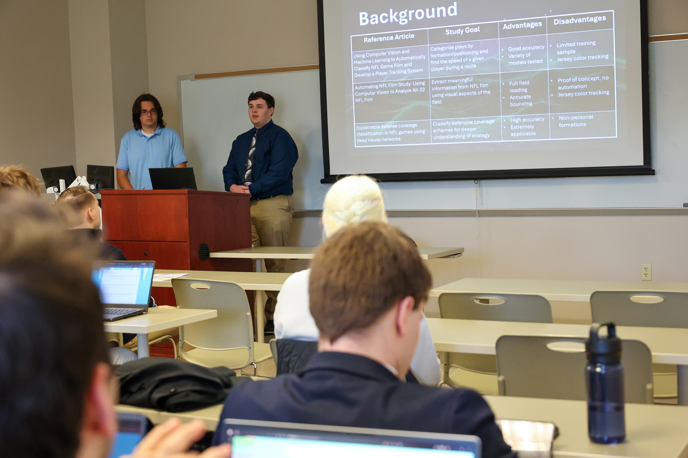
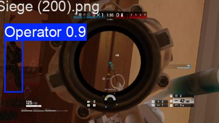

Introduction
I am a third year Computer Science student with no concentration at Elizabethtown College. My main hobbies are gaming and watching sports.
Classes
- CS 310 - Web Development
- CS 341 - Software Engineering
- CS 421 - Programming Language Design and Implementation
- PH 263 - Societal Impacts of Computing, AI., and Robotics
Skilled in
- Data Science
- Machine Learning
- Statistical Modeling
- Software Engineering
Previous Projects
- GridIron Vision - A computer vision model to track football players running along the screen
- Siege Operator Tracker - A computer vision model to detect operators in Siege
- At-Bat Predictor - A ML model to predict the outcome of an at-bat between a batter and a pitcher
- Tank World - A fully functioning tank game with collision detection and interactive gameplay, coded in Java
GridIronVision Presentation:

Siege Operator Computer Vision Model:
